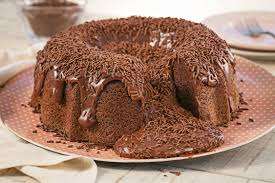

Receita de Bolo Simples

Ingredientes
- 2 xícaras (chá) de farinha de trigo
- 2 xícaras (chá) de açúcar
- 1 xícara (chá) de leite
- 3 ovos
- 4 colheres (sopa) de manteiga
- 1 colher (sopa) de fermento em pó
Modo de Preparo
- Pré-aqueça o forno a 180°C.
- Em uma tigela, misture a manteiga e o açúcar até obter uma mistura cremosa.
- Adicione os ovos um a um, batendo bem após cada adição.
- Acrescente o leite e misture bem.
- Adicione a farinha de trigo aos poucos, mexendo até incorporar completamente.
- Por último, adicione o fermento e misture delicadamente.
- Despeje a massa em uma forma untada e enfarinhada.
- Leve ao forno por aproximadamente 40 minutos, ou até que um palito inserido no centro do bolo saia limpo.
- Retire do forno, deixe esfriar e sirva.
Dicas
- Para um bolo mais fofinho, bata as claras em neve e incorpore delicadamente à massa antes de assar.
- Você pode adicionar raspas de limão ou laranja para dar um toque cítrico ao bolo.
- Se preferir, cubra o bolo com uma calda de chocolate ou polvilhe açúcar de confeiteiro.